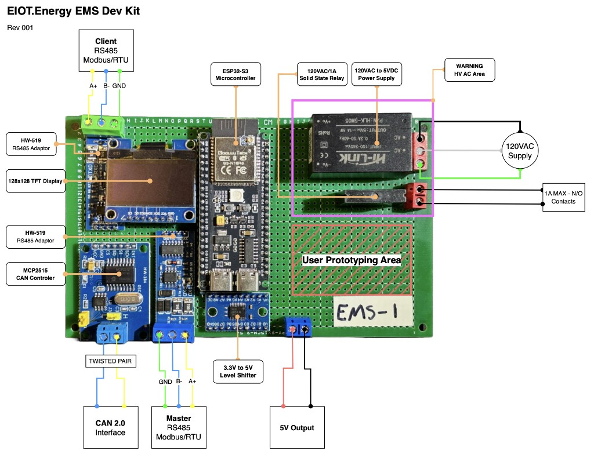

IEEE PES/IAS PowerAfrica · 30 Sep 2025 · Slide deck ↗
← Back to In-Person Events · Home
OpenAMI is an open-source metering stack for African mini-grids — software, hardware, and payments — designed to be community-owned, vendor-agnostic, and transparent on cost. Production (solar + batteries) is tractable; distribution (metering, load management, vending) is the hard part this effort targets.
If the embed does not load, open the Google Slides deck directly. Same deck was also presented at the Linux Foundation Energy Summit Europe 2025 (OpenAMI schema appendix).
| Organization | People | Role in OpenAMI |
|---|---|---|
| REIc (Yaoundé, Cameroon) | Jude Numfor, Michel Fripiat | Field operations & testing · anchor operator (power provider since 2006) |
| IEEE Smart Village | Akash Borde, Adam Sauer | Coordination, technical support, fundraising |
| Energy IoT Open Source | Arila Barnes | Open-source gateway (Street Pole EMS, MeshEMS) |
| EnAccess | Daniel Mohns, Vivien Barnier | Open-source payments platform (MicroPowerManager) |
Solar, power conversion, and storage are increasingly commodity. Load management, metering, and vending remain fragmented, expensive, and poorly supported in Africa.
Consequences: operators cannot deliver power reliably; paying customers and investors lose trust.
The deck contrasts three closed stacks — SparkMeter, SteamaCo/Nimbus-style AMI, utility OEM AMI — with a fourth path: OpenAMI combining EnAccess MPM, Street Pole / MeshEMS gateways, and OEM-agnostic DCU integration.
| Track | Examples | Risk |
|---|---|---|
| (1) SparkMeter-class | Proprietary edge + cloud | Vendor exit strands >10k meters (deck, Sep 2025) |
| (2) SteamaCo / Nimbus | Closed AMI integrations | OEM lock-in, limited second-source DCUs |
| (3) Utility AMI | DLMS end-to-end, full MDMS | Cost & complexity mismatch for villages |
| (4) OpenAMI | MPM + MQTT/OpenAMI + ESP32 gateway | Community-maintained; integration work in progress |
Evolution shown in the deck: proprietary DLMS → MQTT/OpenAMI replacement northbound; SparkMeter cloud → open stack; optional Street Pole EMS and MeshEMS as ESP32 gateways when OEM DCUs cannot be opened directly.

SunSpec models in the appendix: meter telemetry (Hz, per-phase V/I/P/Q, import/export Wh), harmonics, subpanel models, plus proposed bandwidth, RCM leak detection, and GPIO/door sensors — groundwork for an LF Energy OpenAMI working group.
SparkMeter had been a popular AMDA minigrid metering vendor and suddenly exited the market. The deck warned that >10,000 proprietary meters risked becoming e-waste, leaving operators unable to vend or service loans. OpenAMI was positioned as a path to continue operating hardware with new open software — initially for REIc Cameroon, then additional operators.